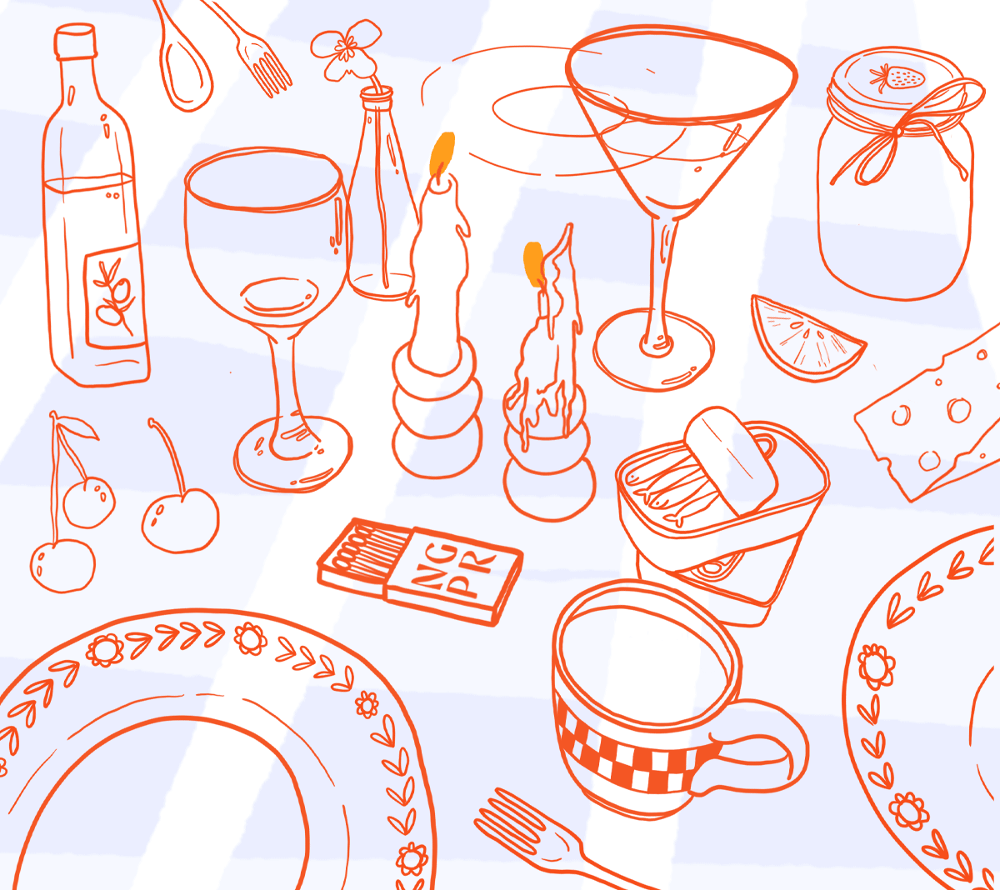
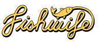
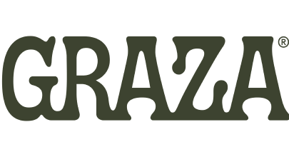
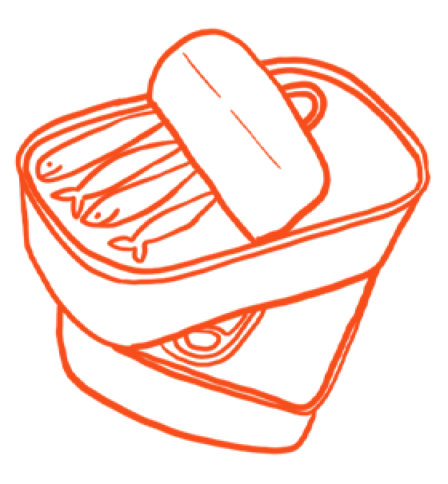
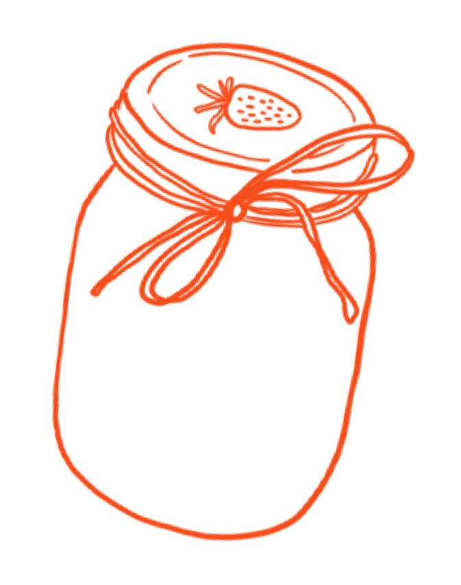
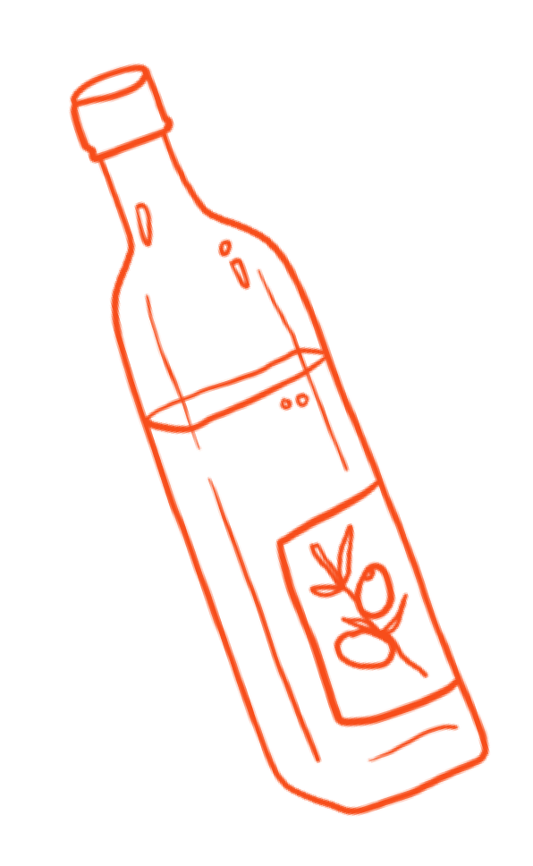

Combining long-term, big picture brand strategy with PR to help consumer brands make their mark.

A decade of invaluable agency experience has given me the opportunity to collaborate with brands like:


EXTRA! EXTRA!


LOVE LETTERS



"Nicole is truly the best in the business. Not only is she incredibly diligent, organized, and thorough, she is also very creative and brings me ideas that I legitimately want and do pursue, which is very rare. I feel so deeply taken care of working with Nicole, and more than anything, I feel I can trust her to always put in 110%, and go above and beyond."
Becca Millstein, CEO, Fishwife
“During my time at Fast Company, Nicole has been a consistently reliable name in my inbox. When thinking about coverage of companies she works with, I know I can bank on her ability to connect me with the right people who will help me tell the story I want to tell. And while always coming to bat for her clients, Nicole respects our work as journalists to be objective.”
David Salazar, Associate Editor, Fast Company
"I work with a lot of PR folks as an editor, and Nicole is by far one of my favorites. She never sends pitches that aren’t relevant to my beat, and she’s always super responsive when I have requests. Nicole also made an effort to really get to know me when we first started working together, which always makes a big difference when building a professional relationship. She has great story angles, she champions her clients, and I can tell she genuinely loves the products she pitches. She’s both easy and lovely to work with—a win-win all around!"
Hannah Baker, Senior Home Editor, Real Simple
"Nicole played a critical role in Graza's success — she helped us build meaningful relationships with the right editors and outlets, shaped the brand's storytelling efforts, and garnered tier A media coverage. Nicole is a true expert AND an incredibly wonderful person to work with. What more could you ask for??"
Kali Shulklapper, Director of Brand Marketing, Graza
LET'S CHAT ABOUT
communications strategy
brand partnerships
brand messaging + positioning development
media relations
media + tastemaker seeding
event ideation
press kit creation
consulting